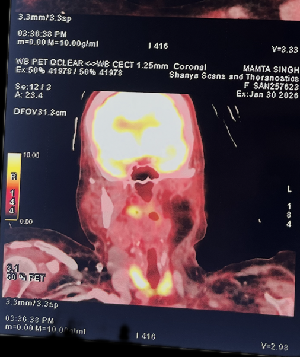
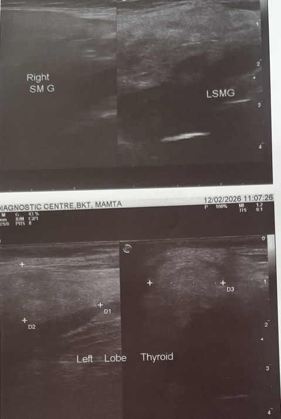

The Metabolic Mirage: High FDG Avidity (\(SUV_{max}\) 14) in Severe Radiation-Induced Hypothyroidism with Normal Ultrasound
Abstract
Introduction: Incidental thyroid uptake on 18F-FDG PET/CT poses a diagnostic dilemma. While focal uptake carries a high malignancy risk, diffuse uptake is generally benign. We report a rare case of intense diffuse uptake (\(SUV_{max}\) 14.0) mimicking malignancy in a post-radiation patient.
Case Presentation: A 51-year-old female treated for carcinoma of the buccal mucosa (surgery and radiotherapy completed Feb 2025) presented with profound hypothyroidism (\(TSH > 100 \mu IU/mL\)) in Feb 2026. A surveillance PET/CT revealed intense diffuse FDG avidity (\(SUV_{max}\) 14.0), raising suspicion for metastasis or lymphoma. However, high-resolution ultrasound (USG) was strictly normal.
Discussion: The dissociation between high metabolic activity and normal structural integrity is explained by “First Principles”: massive TSH stimulation upregulates GLUT-1 glucose transporters on follicular cells, driving FDG uptake. This functional “overdrive” can mimic cancer.
Conclusion: In the presence of severe hypothyroidism, even high-grade diffuse FDG uptake is often physiological. Correlation with ultrasound is critical to avoid unnecessary biopsy.
Keywords: FDG PET/CT, Hypothyroidism, GLUT-1, Radiation Thyroiditis, Incidentaloma.
Introduction
The detection of thyroid incidentalomas on 18F-FDG PET/CT is increasingly common. The clinical approach typically dichotomizes findings into focal uptake (malignancy risk ~35%) and diffuse uptake (malignancy risk ~4%).[2]
However, diagnostic confusion arises when diffuse uptake presents with excessively high Standardized Uptake Values (\(SUV_{max} > 10\)), a range typically reserved for aggressive malignancies like Primary Thyroid Lymphoma or Anaplastic Carcinoma.[2] We present a case where physiological analysis—focusing on the effects of TSH on GLUT-1 transporters—prevented invasive workup in a post-cancer patient with an \(SUV_{max}\) of 14.0.
Case Report
A 51-year-old female presented to the Endocrine clinic in February 2026 with fatigue and weight gain. She had a known history of Carcinoma of the Left Buccal Mucosa, managed with composite resection (Nov 2024) followed by 30 cycles of radiotherapy (completed Feb 08, 2025).
Drug History: Following radiotherapy, she was prescribed Propylthiouracil (PTU) 100 mg BD for 6 months by an outside physician, reportedly for “abnormal thyroid reports.” Retrospective review suggests this was likely radiation-induced destructive thyroiditis misdiagnosed as hyperthyroidism. PTU was stopped in May 2025.
Biochemical Evaluation (Feb 2026): * TSH: \(> 100 \mu IU/mL\) (Ref: 0.27–4.2) * Free T4: \(0.97 ng/dL\) (Ref: 0.93–1.7) * Free T3: \(0.2 pg/mL\) (Ref: 2.0–4.4)
Imaging Findings (PET/CT - 30.01.2026): An 18F-FDG PET/CT was performed for oncological surveillance. * Head & Neck: Post-surgical changes with diffuse mucosal FDG avidity (\(SUV_{max}\) 6.6) in the flap region. * Thyroid: Intense, diffuse FDG avidity was noted in both thyroid lobes with an \(SUV_{max}\) of 14.0 (right lobe). * Structural: The CT component showed a morphologically normal thyroid gland.

Ultrasound Neck: High-resolution USG revealed a normal-sized gland with normal echotexture. There were no nodules, no “thyroid inferno” (seen in Graves’), and no hypoechogenicity (seen in Hashimoto’s or Lymphoma).

Discussion
This case illustrates a “Physiological False Positive” driven by a perfect storm of Radiation Damage, PTU Suppression, and TSH Overdrive.
The Diagnostic Trap
An \(SUV_{max}\) of 14.0 is alarmingly high. Karantanis et al. note that diffuse uptake is typically associated with autoimmune thyroiditis, but usually with lower intensity.[3] Haber et al. demonstrated that GLUT-1 expression (the driver of FDG uptake) is a marker of malignancy in 46% of thyroid cancers.[4] The absence of structural abnormalities on USG in our patient was the pivot point against malignancy.
First Principles: The GLUT-1 Mechanism
Why was the thyroid “glowing” without a tumor? 1. TSH Stimulation: TSH receptors on thyroid follicular cells utilize the cAMP pathway to upregulate GLUT-1 glucose transporters.[1] 2. The “Starving Cell” Hypothesis: The gland, damaged by radiation and previously blocked by PTU, was functionally failing. The pituitary responded with massive TSH secretion (\(>100\)). This forced the remaining viable thyrocytes to hyper-express GLUT-1 and avidly trap FDG to fuel hormone synthesis.[6] 3. Radiation Effect: Post-radiation thyroiditis can cause inflammation, further contributing to FDG avidity, though the normal USG suggests the TSH-metabolic drive was the dominant factor.
Management
Recognizing this as a functional rather than pathological uptake, we initiated Levothyroxine replacement (1.6 mcg/kg). Biopsy was deferred. Resolution of uptake on follow-up PET (after TSH normalization) is the expected confirmatory evidence.
Conclusion
High-grade diffuse FDG uptake (\(SUV_{max} > 10\)) in the thyroid does not always indicate malignancy. In the setting of severe hypothyroidism (\(TSH > 100\)), it is often a marker of TSH-mediated GLUT-1 upregulation and a predictor of future thyroid dysfunction.[5] Clinicians must correlate PET findings with Ultrasound; if the USG is benign, treat the hypothyroidism and observe, rather than biopsy.
References
- Vera P, Kuhn-Lansoy C, Edet-Sanson A, et al. Does TSH trigger 18F-FDG uptake by the thyroid? Eur J Nucl Med Mol Imaging. 2014;41:126–127.
- Soelberg KK, Bonnema SJ, Brix TH, Hegedüs L. Risk of malignancy in thyroid incidentalomas detected by 18F-FDG PET: a systematic review. Thyroid. 2012;22(9):918-925.
- Karantanis D, Bogsrud TV, Wiseman GA, et al. Clinical significance of diffusely increased 18F-FDG uptake in the thyroid gland. J Nucl Med. 2007;48(6):896-901.
- Haber RS, Weiser KR, Pritsker A, Reder I, Burstein DE. GLUT1 glucose transporter expression in benign and malignant thyroid nodules. Thyroid. 1997;7(3):363-367.
- Kim YH, Chang Y, Kim Y, et al. Diffusely Increased 18F-FDG Uptake in the Thyroid Gland and Risk of Thyroid Dysfunction: A Cohort Study. J Clin Med. 2019;8(5):603.
- Gabriele E, Pellicori S, Romano L, et al. Thyroid uptake of 18F-FDG in patients with severe hypothyroidism. Endocrine. 2017;55:976–978.